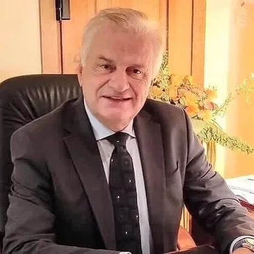

Παρακολούθηση εγκυμοσύνης
Από το πρώτο ραντεβού μέχρι τον τοκετό, με τακτικούς ελέγχους και υπερηχογραφήματα σε κάθε στάδιο.

Ιλίσια · Λεωφ. Βασιλίσσης Σοφίας · Αθήνα
Από το 1985 κοντά στη γυναίκα και στην οικογένεια: παρακολούθηση εγκυμοσύνης, προγεννητικός έλεγχος και γυναικολογική φροντίδα στην Αθήνα — με μετεκπαίδευση στην Εμβρυομητρική Ιατρική στο King’s College Hospital του Λονδίνου και επιστημονική συνεργασία με το Μαιευτήριο ΙΑΣΩ.

Ο γιατρός
Ο Ιωάννης Ευστ. Σταθόπουλος γεννήθηκε στην Αρκαδία (Μυγδαλιά – Βαλτεσινίκο Γορτυνίας) από γονείς δασκάλους. Η μητέρα του υπήρξε η πρώτη Διευθύντρια του 5ου (Χέλμειου) Δημοτικού Σχολείου Αγίας Παρασκευής και ο πατέρας του Διευθυντής του 1ου Δημοτικού Σχολείου Αγίας Παρασκευής το 1971 και Επιθεωρητής Δημοτικών Σχολείων.
Υπότροφος και πτυχιούχος της Ιατρικής Σχολής του Πανεπιστημίου Αθηνών, απέκτησε την ειδικότητα του Μαιευτήρα – Χειρουργού – Γυναικολόγου το 1985. Υπηρέτησε στο Υγειονομικό του Στρατού Ξηράς τα έτη 1979–1981.
Μετεκπαιδεύτηκε στο Τμήμα Προγεννητικού Ελέγχου και Εμβρυομητρικής Ιατρικής του Νοσοκομείου King’s College στο Λονδίνο, με διευθυντή τον φημισμένο Ελληνοκύπριο καθηγητή Κύπρο Νικολαΐδη, και είναι επιστημονικός συνεργάτης του Μαιευτηρίου ΙΑΣΩ.
Εργασίες του έχουν δημοσιευθεί σε ελληνικά και ξενόγλωσσα περιοδικά. Υπήρξε ομιλητής σε διεθνή και ελληνικά συνέδρια και σεμινάρια, και είναι μέλος ιατρικών εταιρειών στην Ελλάδα και το εξωτερικό, καθώς και του Συλλόγου Επιστημόνων Αγίας Παρασκευής.
Υπηρεσίες
Στο ιατρείο στη Λεωφόρο Βασιλίσσης Σοφίας, στα Ιλίσια. Κάθε εξέταση και κάθε πρόγραμμα προσαρμόζεται στη γυναίκα που έχει απέναντί του.
Από το πρώτο ραντεβού μέχρι τον τοκετό, με τακτικούς ελέγχους και υπερηχογραφήματα σε κάθε στάδιο.
Με μετεκπαίδευση στο Τμήμα Προγεννητικού Ελέγχου και Εμβρυομητρικής Ιατρικής του King’s College Hospital, με τον καθηγητή Κύπρο Νικολαΐδη.
Υπερηχογραφικός έλεγχος στο ιατρείο, στην εγκυμοσύνη και στη γυναικολογία.
Επιστημονικός συνεργάτης του Μαιευτηρίου ΙΑΣΩ.
Τακτική γυναικολογική εξέταση και προληπτικός έλεγχος, όπως το τεστ Παπανικολάου, σε κάθε ηλικία.
Ως χειρουργός γυναικολόγος, εκτίμηση και αντιμετώπιση γυναικολογικών παθήσεων που χρειάζονται επέμβαση.
Η εγκυμοσύνη
Τα βασικά ραντεβού μιας εγκυμοσύνης, εβδομάδα με εβδομάδα. Συνεχίστε να κυλάτε.
Επιβεβαίωση της εγκυμοσύνης, το πρώτο υπερηχογράφημα και οι βασικές εξετάσεις — και ένα πρόγραμμα για τους επόμενους μήνες.
Ο έλεγχος της αυχενικής διαφάνειας — μια μέθοδος που αναπτύχθηκε στο King’s College Hospital από την ομάδα του καθηγητή Κύπρου Νικολαΐδη.
Λεπτομερής έλεγχος της ανατομίας του μωρού στο μέσο της εγκυμοσύνης.
Παρακολούθηση της ανάπτυξης και της καλής κατάστασης του μωρού στο τρίτο τρίμηνο.
Η προετοιμασία για τη γέννα και ο τοκετός — η αρχή μιας καινούργιας ιστορίας.
Ενδεικτικό χρονοδιάγραμμα — κάθε εγκυμοσύνη παρακολουθείται με το δικό της πρόγραμμα.
Η διαδρομή
Γεννήθηκε στην Αρκαδία, από γονείς δασκάλους.
Υπότροφος και πτυχιούχος της Ιατρικής Σχολής του Πανεπιστημίου Αθηνών.
Στρατιωτική θητεία ως ιατρός στο Υγειονομικό του Στρατού Ξηράς.
Μαιευτήρας – Χειρουργός Γυναικολόγος.
Μετεκπαίδευση στον Προγεννητικό Έλεγχο και την Εμβρυομητρική Ιατρική, με τον καθηγητή Κύπρο Νικολαΐδη.
Επιστημονικός συνεργάτης του Μαιευτηρίου ΙΑΣΩ, με ιατρείο στη Λεωφόρο Βασιλίσσης Σοφίας.
Συχνές ερωτήσεις
Με μια ματιά
Στη Λεωφόρο Βασιλίσσης Σοφίας 66, στα Ιλίσια (115 28, Αθήνα), λίγα λεπτά με τα πόδια από τον σταθμό μετρό «Μέγαρο Μουσικής».
Τηλεφωνικά, στο ιατρείο 210 724 9536 ή στο κινητό 693 221 5001. Οι επισκέψεις γίνονται κατόπιν ραντεβού.
Μόλις έχετε θετικό τεστ εγκυμοσύνης, ένα τηλεφώνημα αρκεί για να οργανωθεί η πρώτη επίσκεψη και οι εξετάσεις που χρειάζονται.
Είναι επιστημονικός συνεργάτης του Μαιευτηρίου ΙΑΣΩ.
Πρόσφατες εξετάσεις ή υπερηχογραφήματα, αν έχετε, και μια λίστα με όποια φάρμακα παίρνετε.
Είναι μαιευτήρας – χειρουργός γυναικολόγος από το 1985 και μετεκπαιδεύτηκε στην Εμβρυομητρική Ιατρική στο King’s College Hospital του Λονδίνου.
Επικοινωνία
Οι επισκέψεις γίνονται κατόπιν ραντεβού, στο ιατρείο στη Λεωφόρο Βασιλίσσης Σοφίας. Τηλεφωνήστε στο ιατρείο ή στο κινητό.
Το ιατρείο βρίσκεται στη Λεωφόρο Βασιλίσσης Σοφίας 66, στα Ιλίσια, κοντά στο Μέγαρο Μουσικής. Μετρό: «Μέγαρο Μουσικής» (γραμμή 3), λίγα λεπτά με τα πόδια.
Οδηγίες με Google Maps